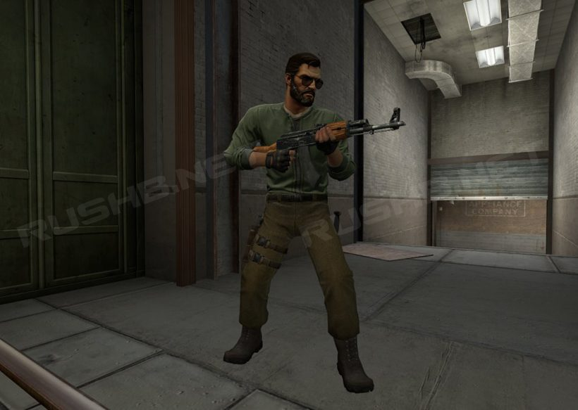
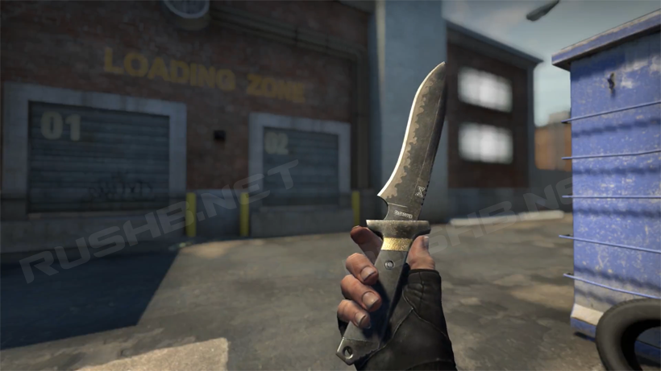
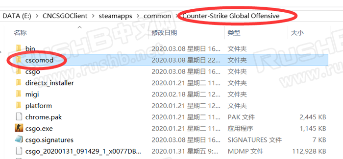
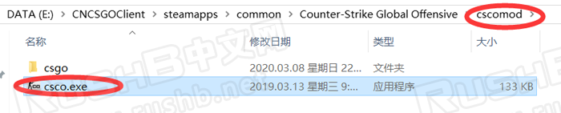
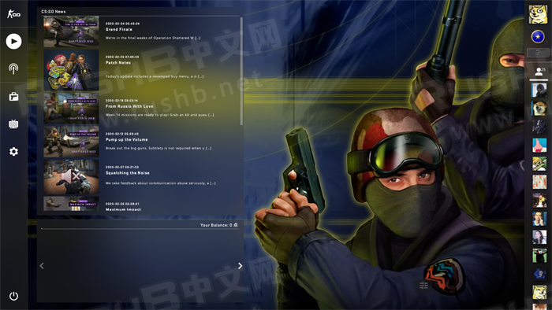
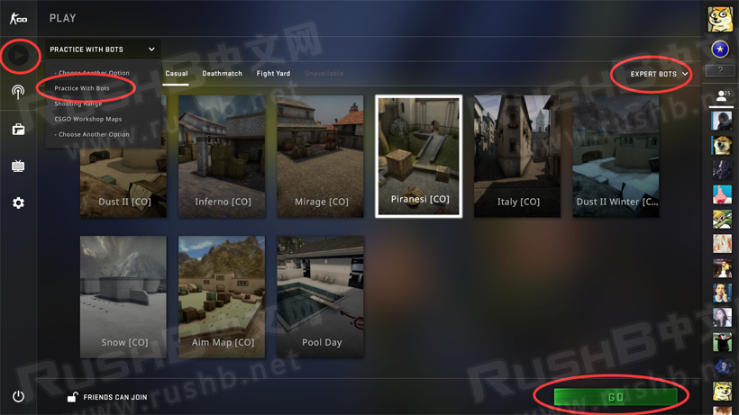
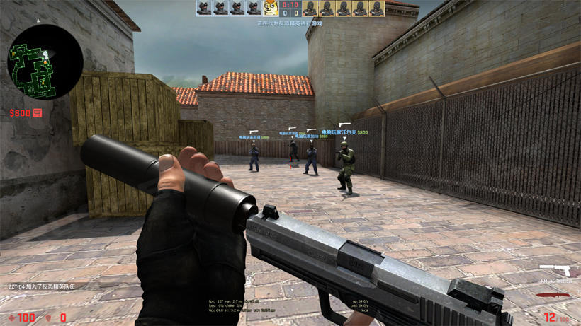
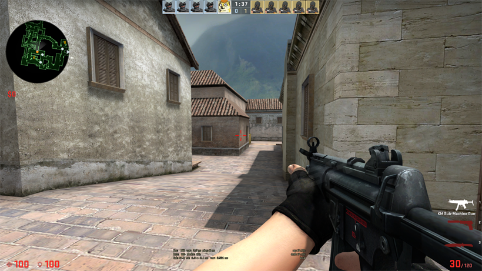

CSGO RushB中文网
CSGO RushB中文网
经典攻势介绍
经典攻势（全称Classic Offensive，本文简称为CSCO）于2016年年底推出免费体验版，是由ZooL及其社区开发团队以反恐精英：全球攻势为基础制作的第三方MOD，通过将地图、音效、角色和武器完全重制为CS 1.6及CS起源版本，让玩家在CSGO上也能体验到反恐精英经典元素。
*CSCO MOD需要CSGO游戏本体才能运行。
此为开发中的T人物模型，未包含在体验版里
为了让广大CSGO玩家体验，经典攻势于2017年1月14日提交至Steam绿光（GREENLIGHT），获得大量支持，计划在未来正式登录Steam商店，届时CSGO玩家可以免费下载游玩。在正式发布前，CSCO团队会重新制作游戏内所有地图及人物武器模型，赞助CSCO团队，以帮助他们加快开发进程，欢迎查看至今所有CSCO开发日志。
*由于版权问题，经典攻势（Classic Offensive）正式名称不会包含反恐精英（Counter-Strike）字样，同样的，游戏内所有内容会全部重新制作（包括地图、模型、贴图等，目前体验版素材取自CSPro）。
*CSCO不会包含皮肤内容，也不支持现有CSGO皮肤。
经典海豹短刀
体验版下载安装教程
2021年更新，由于CSGO更新，不再支持以下MOD，等哪天CSCO官方修复吧。
首先说明，目前CSCO仍在开发当中，在2016年提供了体验版供玩家试玩，到了2020年，针对CSGO游戏更新引起的多个问题推出了修复测试补丁（Beta1.25），不过仍不包括开发日志内容（比如重置武器/人物/地图，这些内容需要等到Steam正式版），除了修复问题，还加入了全景UI相关图标，具体请进入游戏体验，至于Steam正式版，还请慢慢等待。
注意：
- CSCO是第三方MOD，玩家需要CSGO游戏本体才能运行
- 体验版所使用的模型来自CS起源/CSPro
- 最新测试体验版修复了BOT专家难度崩溃问题，还有全景UI中文显示乱码等多个问题
- 测试体验版目前只能单机或者本地建服邀请好友一起游玩
1、下载ClassicOffensive_Beta1.25（百度网盘）
链接：https://pan.baidu.com/s/1MI-t5yDxpfWr_RziXtmtzA
提取码：46r0
2、下载完成后，打开压缩包“ClassicOffensive_Beta1.24.zip”，将其中的“cscomod”文件夹解压至：
\steamapps\common\Counter-Strike Global Offensive，如图：

解压完成后，打开“cscomod”，运行其中的“csco.exe”程序，即可开始游玩：

游戏内界面：

单机游戏方法：进入游戏后，点击“游玩”按钮——选择“Practice With Bots”——选择地图和BOT单独——点击“GO”开始游戏：


